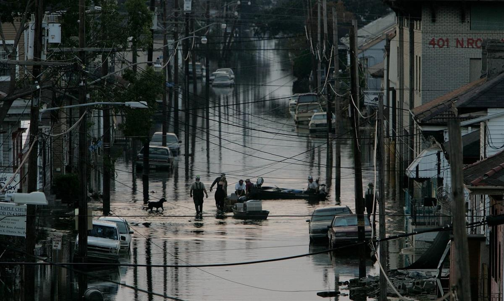
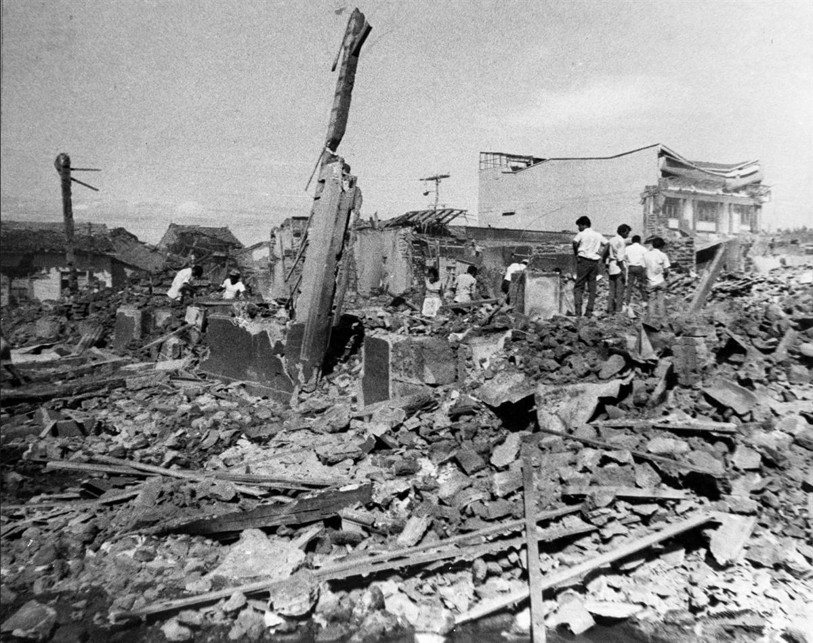
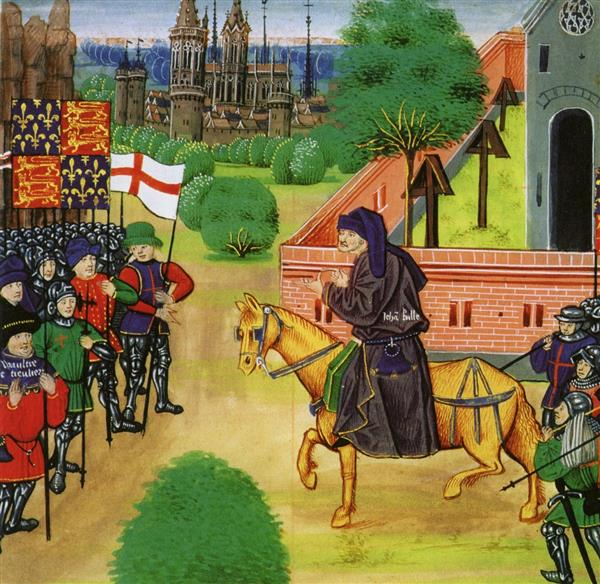

In the midst of fear and isolation, we are learning that profound, positive change is possible. By Rebecca Solnit
Tue 7 Apr 2020 06.00 BST
Disasters begin suddenly and never really end. The future will not, in crucial ways, be anything like the past, even the very recent past of a month or two ago. Our economy, our priorities, our perceptions will not be what they were at the outset of this year. The particulars are startling: companies such as GE and Ford retooling to make ventilators, the scramble for protective gear, once-bustling city streets becoming quiet and empty, the economy in freefall. Things that were supposed to be unstoppable stopped, and things that were supposed to be impossible – extending workers’ rights and benefits, freeing prisoners, moving a few trillion dollars around in the US – have already happened.
The word “crisis” means, in medical terms, the crossroads a patient reaches, the point at which she will either take the road to recovery or to death. The word “emergency” comes from “emergence” or “emerge”, as if you were ejected from the familiar and urgently need to reorient. The word “catastrophe” comes from a root meaning a sudden overturning.
We have reached a crossroads, we have emerged from what we assumed was normality, things have suddenly overturned. One of our main tasks now – especially those of us who are not sick, are not frontline workers, and are not dealing with other economic or housing difficulties – is to understand this moment, what it might require of us, and what it might make possible.
A disaster (which originally meant “ill-starred”, or “under a bad star”) changes the world and our view of it. Our focus shifts, and what matters shifts. What is weak breaks under new pressure, what is strong holds, and what was hidden emerges. Change is not only possible, we are swept away by it. We ourselves change as our priorities shift, as intensified awareness of mortality makes us wake up to our own lives and the preciousness of life. Even our definition of “we” might change as we are separated from schoolmates or co-workers, sharing this new reality with strangers. Our sense of self generally comes from the world around us, and right now, we are finding another version of who we are.
As the pandemic upended our lives, people around me worried that they were having trouble focusing and being productive. It was, I suspected, because we were all doing other, more important work. When you’re recovering from an illness, pregnant or young and undergoing a growth spurt, you’re working all the time, especially when it appears you’re doing nothing. Your body is growing, healing, making, transforming and labouring below the threshold of consciousness. As we struggled to learn the science and statistics of this terrible scourge, our psyches were doing something equivalent. We were adjusting to the profound social and economic changes, studying the lessons disasters teach, equipping ourselves for an unanticipated world.
The first lesson a disaster teaches is that everything is connected. In fact, disasters, I found while living through a medium-sized one (the 1989 earthquake in the San Francisco Bay Area) and later writing about major ones (including 9/11, Hurricane Katrina and the 2011 Tōhoku earthquake and Fukushima nuclear catastrophe in Japan), are crash courses in those connections. At moments of immense change, we see with new clarity the systems – political, economic, social, ecological – in which we are immersed as they change around us. We see what’s strong, what’s weak, what’s corrupt, what matters and what doesn’t.
I often think of these times as akin to a spring thaw: it’s as if the pack ice has broken up, the water starts flowing again and boats can move through places they could not during winter. The ice was the arrangement of power relations that we call the status quo – it seems to be stable, and those who benefit from it often insist that it’s unchangeable. Then it changes fast and dramatically, and that can be exhilarating, terrifying, or both.

Flooding in New Orleans after Hurricane Katrina in September 2005. Photograph: Justin Sullivan/Getty ImagesThose who benefit most from the shattered status quo are often more focused on preserving or reestablishing it than protecting human life – as we saw when a chorus of US conservatives and corporate top dogs insisted that, for the sake of the stock market, everyone had to go back to work, and that the resultant deaths would be an acceptable price to pay. In a crisis, the powerful often try to seize more power – as they have in this round, with the Trump Department of Justice looking at suspending constitutional rights – and the rich seek more riches: two Republican senators are under fire for allegedly using inside information about the coming pandemic to make a profit in the stock market (although both have denied wrongdoing).
Disaster scholars use the term “elite panic” to describe the ways that elites react when they assume that ordinary people will behave badly. When elites describe “panic” and “looting” in the streets, these are usually misnomers for ordinary people doing what they need to do to survive or care for others. Sometimes it’s wise to move rapidly from danger; sometimes it’s altruistic to gather supplies to share.
Such elites often prioritise profit and property over human life and community. In the days after a huge earthquake struck San Francisco on 18 April 1906, the US military swarmed over the city, convinced that ordinary people were a threat and a source of disorder. The mayor issued a “shoot to kill” proclamation against looters, and the soldiers believed they were restoring order. What they were actually doing was setting inexpert firebreaks that helped fire spread through the city, and shooting or beating citizens who disobeyed orders (sometimes those orders were to let the fires burn down their own homes and neighbourhoods). Ninety-nine years later, in the aftermath of Hurricane Katrina, New Orleans’s police and white vigilantes did the same thing: shooting black people in the name of defending property and their own authority. The local, state and federal government insisted on treating a stranded, mostly poor, mostly black population as dangerous enemies to be contained and controlled, rather than victims of a catastrophe to be aided.
The mainstream media colluded in obsessing about looting in the aftermath of Katrina. The stock of mass-manufactured goods in large corporate chain stores seemed to matter more than people needing food and clean water, or grandmothers left clinging to roofs. Nearly 1,500 people died of a disaster that had more to do with bad government than with bad weather. The US Army Corps of Engineers’ levees had failed; the city had no evacuation plans for the poor, and President George W Bush’s administration failed to deliver prompt and effective relief. The same calculus is happening now. A member of the Brazilian opposition said of Brazil’s rightwing president Jair Bolsonaro: “He represents the most perverse economic interests that couldn’t care less about people’s lives. They’re worried about maintaining their profitability.” (Bolsonaro claims he is trying to protect workers and the economy.)
The billionaire evangelist who owns the arts and crafts chain Hobby Lobby claimed divine guidance in keeping his workers at their jobs when businesses were ordered to close. (The company has now closed all its stores.) At Uline Corporation, owned by billionaire Trump backers Richard and Liz Uihlein, a memo sent to Wisconsin workers said: “please do NOT tell your peers about the symptoms & your assumptions. By doing so, you are causing unnecessary panic in the office.” The billionaire founder and chairman of payroll processing corporation Paychex, Tom Golisano, said: “The damages of keeping the economy closed as it is could be worse than losing a few more people.” (Golisano has since said his comments were misrepresented, and has apologised.)
Historically, there have always been titans of industry who prized the lifeless thing that is profit over living beings, who paid bribes in order to operate unhindered, worked children to death or put labourers in mortal danger in sweatshops and coal mines. There were also those who pressed on with fossil fuel extraction and burning despite what they knew, or refused to know, about climate change. One of the primary uses of wealth has always been to buy your way out of the common fate, or, at least, it has come with a belief that you can disassociate from society at large. And while the rich are often conservative, conservatives more often align with the rich, whatever their economic status.
The idea that everything is connected is an affront to conservatives who cherish a macho every-man-for-himself frontier fantasy. Climate change has been a huge insult to them – this science that says what comes out of our cars and chimneys shapes the fate of the world in the long run and affects crops, sea level, forest fires and so much more. If everything is connected, then the consequences of every choice and act and word have to be examined, which we see as love in action and they see as impingement upon absolute freedom, freedom being another word for absolutely no limits on the pursuit of self-interest. Ultimately, a significant portion of conservatives and corporate leaders regard science as an annoyance that they can refuse to recognise. Some insist they can choose whatever rules and facts they want, as though these too are just free-market commodities to pick and choose from or remake according to one’s whims. “This denial of science and critical thinking among religious ultraconservatives now haunts the American response to the coronavirus crisis,” wrote the journalist Katherine Stewart in the New York Times.
Our rulers showed little willingness to recognise the ominous possibilities of the pandemic in the US, the UK, Brazil and many other countries. They failed in their most important job, and denying that failure will be a major focus for them. And while it may be inevitable that the pandemic will result in an economic crash, it is also turning into an opportunity for authoritarian power grabs in the Philippines, Hungary, Israel and the US – a reminder that the largest problems are still political, and so are their solutions.
When a storm subsides, the air is washed clean of whatever particulate matter has been obscuring the view, and you can often see farther and more sharply than at any other time. When this storm clears, we may, as do people who have survived a serious illness or accident, see where we were and where we should go in a new light. We may feel free to pursue change in ways that seemed impossible while the ice of the status quo was locked up. We may have a profoundly different sense of ourselves, our communities, our systems of production and our future.
For many of us in the developed world, what has changed most immediately is spatial. We have stayed home, those of us who have homes, and away from contact with others. We have withdrawn from schools, workplaces, conferences, vacations, gyms, errands, parties, bars, clubs, churches, mosques, synagogues, from the busyness and bustle of everyday life. The philosopher-mystic Simone Weil once wrote to a faraway friend: “Let us love this distance, which is thoroughly woven with friendship, since those who do not love each other are not separated.” We have withdrawn from each other to protect each other. And people have found ways to help the vulnerable, despite the need to remain physically distant.
My friend Renato Redentor Constantino, a climate campaigner, wrote to me from the Philippines, and said: “We are witness today to daily displays of love that remind us of the many reasons why humans have survived this long. We encounter epic acts of courage and citizenship each day in our neighbourhoods and in other cities and countries, instances that whisper to us that the depredations of a few will eventually be overcome by legions of stubborn people who refuse the counsel of despair, violence, indifference and arrogance that so-called leaders appear so eager nowadays to trigger.”
When we are no longer trying to unlink ourselves from the chain of a spreading disease, I wonder if we will rethink how we were linked, how we moved about and how the goods we rely on moved about. Perhaps we will appreciate the value of direct face-to-face contact more. Perhaps the Europeans who have sung together from their balconies or applauded together for their medical workers, and the Americans who came out to sing or dance on their suburban blocks, will have a different sense of belonging. Perhaps we will find a new respect for the workers who produce our food and those who bring it to our tables.
Although staying put is hard, maybe we will be reluctant to resume our rushing about, and something of the stillness now upon us will stay with us. We may rethink the wisdom of having much of our most vital stuff – medicine, medical equipment – made on other continents. We may also rethink the precarious just-in-time supply chains. I have often thought that the wave of privatisation that has characterised our neoliberal age began with the privatisation of the human heart, the withdrawal from a sense of a shared fate and social bonds. It is to be hoped that this shared experience of catastrophe will reverse the process. A new awareness of how each of us belongs to the whole and depends on it may strengthen the case for meaningful climate action, as we learn that sudden and profound change is possible after all.
“Getting and spending, we lay waste our powers,” Wordsworth wrote, a little more than 200 years ago. Perhaps this will be the moment that we recognise that there is enough food, clothing, shelter, healthcare and education for all – and that access to these things should not depend on what job you do and whether you earn enough money. Perhaps the pandemic is also making the case, for those who were not already convinced, for universal healthcare and basic income. In the aftermath of disaster, a change of consciousness and priorities are powerful forces.

‘It helped bring on the revolution’ … damage from the earthquake that struck Managua in Nicaragua in 1972. Photograph: APA dozen years ago I interviewed the Nicaraguan poet and Sandinista revolutionary Giocondo Belli for my book on disaster, A Paradise Built in Hell. What she told me about the aftermath of the 1972 earthquake in Managua – that, despite the dictatorship’s crackdown, it helped bring on the revolution – was unforgettable. She said: “You had a sense of what was important. And people realised that what was important was freedom and being able to decide your life and agency. Two days later you had this tyrant imposing a curfew, imposing martial law. The sense of oppression on top of the catastrophe was really unbearable. And once you had realised that your life can be decided by one night of the Earth deciding to shake, [you thought]: ‘So what? I want to live a good life and I want to risk my life, because I can also lose my life in one night.’ You realise that life has to be lived well or is not worth living. It’s a very profound transformation that takes place during catastrophes.”
I have found over and over that the proximity of death in shared calamity makes many people more urgently alive, less attached to the small things in life and more committed to the big ones, often including civil society or the common good.
I have mostly written about 20th-century disasters, but one analogy a bit further back comes to mind: the Black Death, which wiped out a third of Europe’s population, and, in England, later led to peasant revolts against war taxes and wage caps that were officially quashed, but nevertheless led to more rights and freedoms for peasants and labourers. In the emergency legislation passed in the US in March, many workers gained new sick-leave rights. Lots of things we were assured were impossible – housing the homeless, for example – have come to pass in some places.
Ireland nationalised its hospitals, something “we were told would never happen and could never happen,” an Irish journalist commented. Canada came up with four months of basic income for those who lost their jobs. Germany did more than that. Portugal decided to treat immigrants and asylum seekers as full citizens during the pandemic. In the US, we have seen powerful labour agitation, and results. Workers at Whole Foods, Instacart and Amazon have protested at being forced to work in unsafe conditions during the pandemic. (Whole Foods has since offered workers who test positive two weeks off on full pay; Instacart says it has made changes to safeguard workers and shoppers, while Amazon said it is “following guidelines” on safety.) Some workers have gained new rights and raises, including almost half a million Kroger grocery store workers, while 15 state attorneys-general told Amazon to expand its paid sick leave. These specifics make clear how possible it is to change the financial arrangements of all our societies.

The English peasants’ revolt of 1381. Photograph: Pictorial Press Ltd/Alamy
But often the most significant consequences of disasters are not immediate or direct. The 2008 financial collapse led to 2011’s Occupy Wall Street uprising, which prompted a new reckoning with economic inequality and a new scrutiny of the human impact of exploitative mortgages, student loans, for profit-colleges, health-insurance systems and more, and that in turn amplified the profiles of Elizabeth Warren and Bernie Sanders, whose ideas have helped pull the Democratic party to the left, towards policies that will make the US fairer and more equal. The conversations stirred by Occupy and its sister movements across the globe incited more critical scrutiny of ruling powers, and more demands for economic justice. Changes in the public sphere originate within the individual, but also, changes in the world at large affect our sense of self, our priorities and our sense of the possible.
We are only in the early stages of this disaster, and we are also in a strange stillness. It is like the Christmas truce of 1914, when German and English soldiers stopped fighting for a day, the guns fell silent and soldiers mingled freely. War itself paused. There’s a way that our getting and spending has been a kind of war against the Earth. Since the outbreak of Covid-19, carbon emissions have plummeted. Reports say the air above Los Angeles, Beijing and New Delhi is miraculously clean. Parks all over the US are shut to visitors, which may have a beneficial effect on wildlife. In the last government shutdown of 2018-2019, elephant seals at Point Reyes National Seashore just north of San Francisco took over a new beach, and now own it for the duration of their season of mating and birthing on land.
There’s another analogy that comes to mind. When a caterpillar enters its chrysalis, it dissolves itself, quite literally, into liquid. In this state, what was a caterpillar and will be a butterfly is neither one nor the other, it’s a sort of living soup. Within this living soup are the imaginal cells that will catalyse its transformation into winged maturity. May the best among us, the most visionary, the most inclusive, be the imaginal cells – for now we are in the soup. The outcome of disasters is not foreordained. It’s a conflict, one that takes place while things that were frozen, solid and locked up have become open and fluid – full of both the best and worst possibilities. We are both becalmed and in a state of profound change.
But this is also a time of depth for those spending more time at home and more time alone, looking outward at this unanticipated world. We often divide emotions into good and bad, happy and sad, but I think they can equally be divided into shallow and deep, and the pursuit of what is supposed to be happiness is often a flight from depth, from one’s own interior life and the suffering around us – and not being happy is often framed as a failure. But there is meaning as well as pain in sadness, mourning and grief, the emotions born of empathy and solidarity. If you are sad and frightened, it is a sign that you care, that you are connected in spirit. If you are overwhelmed – well, it is overwhelming, and it will take decades of study, analysis, discussion and contemplation to understand how and why 2020 suddenly took us all into marshy new territory.
Seven years ago, Patrisse Cullors wrote a sort of mission statement for Black Lives Matter: “Provide hope and inspiration for collective action to build collective power to achieve collective transformation. Rooted in grief and rage but pointed towards vision and dreams.” It is beautiful not only because it is hopeful, not only because then Black Lives Matter set out and did transformative work, but because it acknowledges that hope can coexist with difficulty and suffering. The sadness in the depths and the fury that burns above are not incompatible with hope, because we are complex creatures, because hope is not optimism that everything will be fine regardless.
Hope offers us clarity that, amid the uncertainty ahead, there will be conflicts worth joining and the possibility of winning some of them. And one of the things most dangerous to this hope is the lapse into believing that everything was fine before disaster struck, and that all we need to do is return to things as they were. Ordinary life before the pandemic was already a catastrophe of desperation and exclusion for too many human beings, an environmental and climate catastrophe, an obscenity of inequality. It is too soon to know what will emerge from this emergency, but not too soon to start looking for chances to help decide it. It is, I believe, what many of us are preparing to do.
SOURCE: THE GUARDIAN